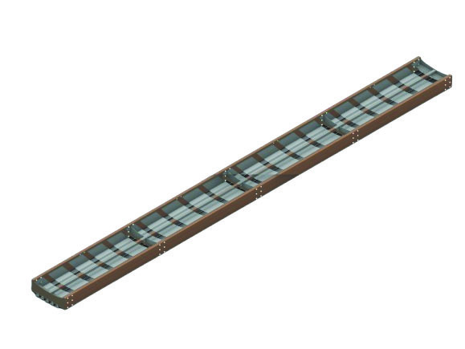
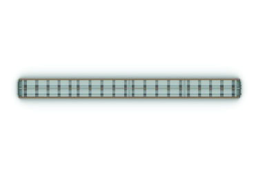
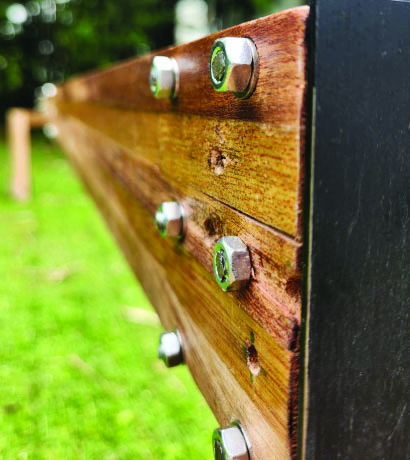
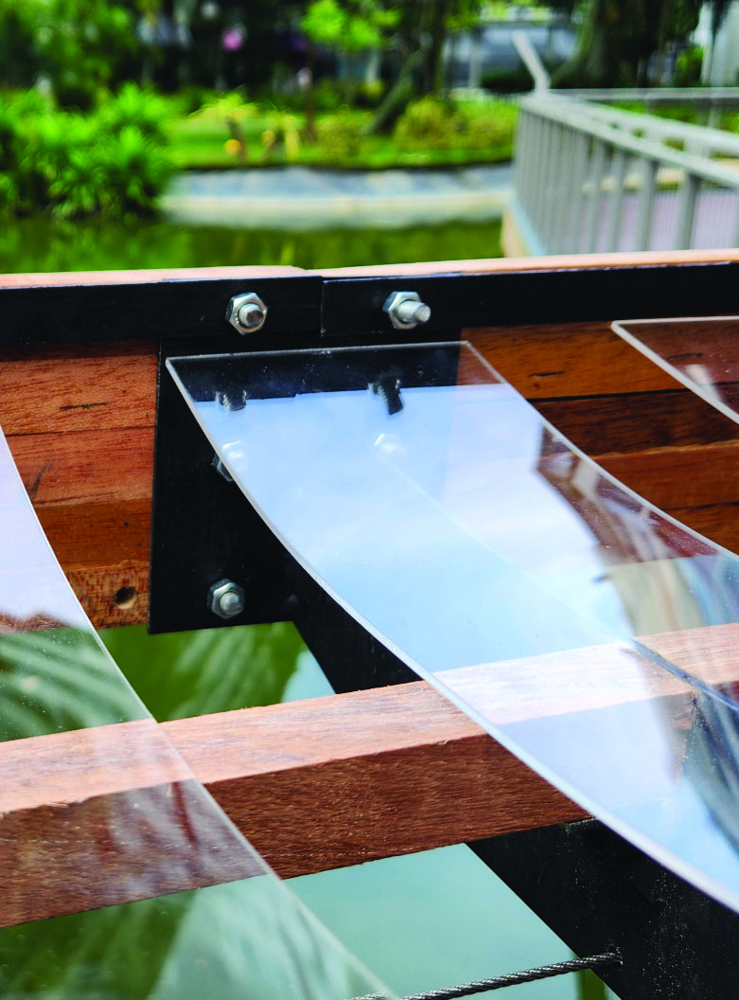
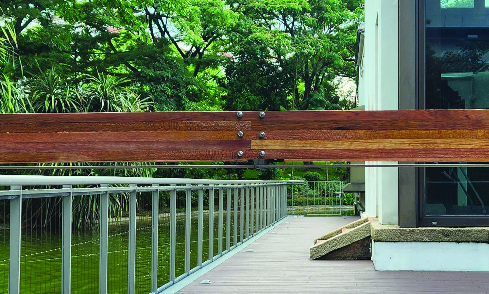
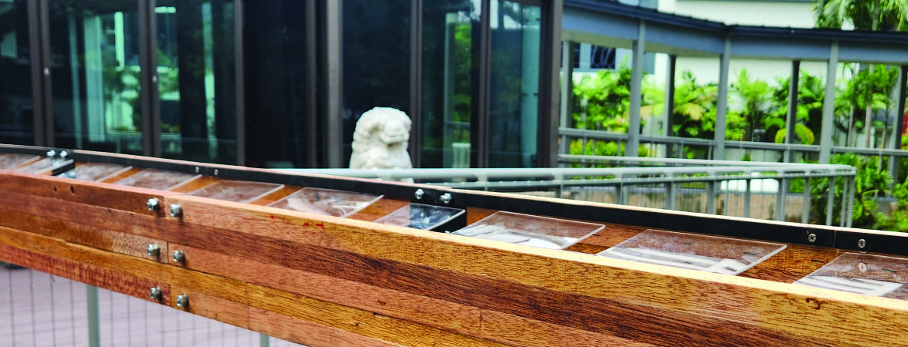
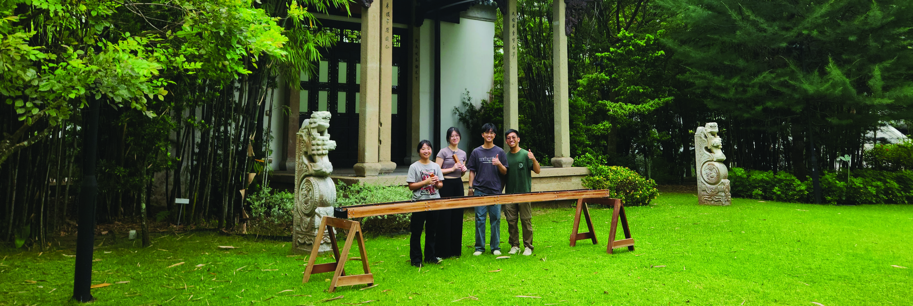
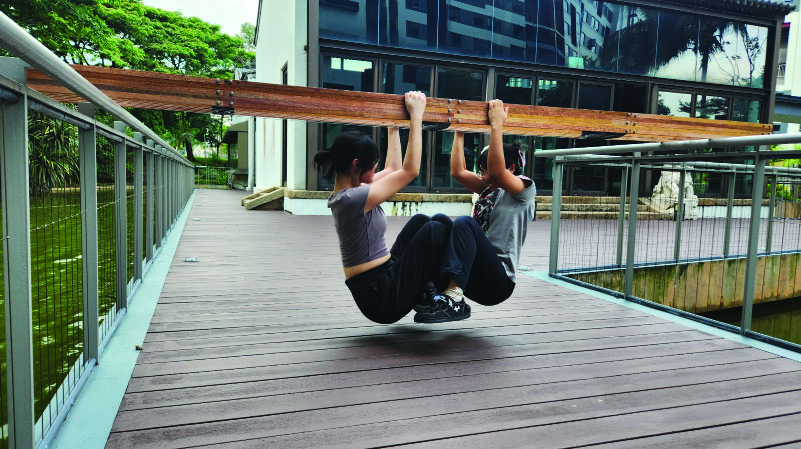
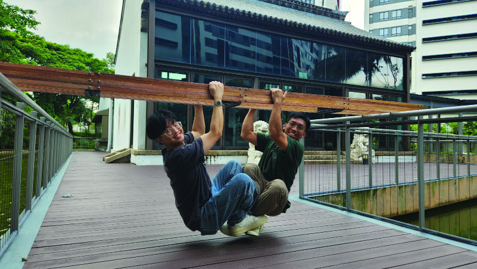

Bridge Structure
Brief
A post-tensioned timber-metal composite bridge exploring the intersection of craftsmanship, structural efficiency, and material clarity. The design prioritises simplicity and precision — two continuous laminated wood planks define the bridge's linear span, with curved metal sheets inserted between to distribute loads and introduce a reflective surface that lightens the visual impact.
Completed as a group project for 20.212 Digital Design & Fabrication and 20.202 Structures at SUTD.
Design — Two Lines
The concept distils a bridge down to its most essential gesture — two lines. The main structure is composed of composite wood lamination, forming two continuous planks that emphasise hand-crafted quality while allowing for subtle curvature and strength. Curved metal sheets sit between the laminations, distributing loads and adding a contemporary contrast to the warm timber.
Friction-fit acrylic panels were inserted between the wood members to create a transparent surface that reveals the bridge's structural skeleton — making the internal logic of the design legible and honest.

Axonometric view

Plan view
Construction
The fabrication process involved three parallel material streams — wood lamination (planing, cutting, gluing, and oiling), metal sheet work (laser cutting, welding, sanding, and painting), and acrylic panels (laser cutting and friction-fitting). The staggered wood members improve structural integrity against deflection.
To reinforce the structure, steel tension rods were threaded through the wooden elements and post-tensioned on site. With 90 kg of applied load, the rods were tightened to pre-stress the bridge, reducing deflection and allowing the slender profile to span without intermediate supports. The tensioning system becomes a visible, legible part of the design.


Construction details — wood-metal joinery and friction-fit acrylic
Results
The bridge achieved the highest efficiency ratio in the cohort. Despite a lightweight structure of 16.3 kg, it exhibited only 0.5 cm of deflection under a 20 kg load — demonstrating how careful material selection and post-tensioning can maximise load-bearing capacity with minimal structural deformation.
| Metric | Value |
|---|---|
| Span | 3.8 m |
| Weight | 16.3 kg |
| Deflection (20 kg load) | 0.5 cm |
| Efficiency ratio | 2.45 (highest in cohort) |

Final bridge on site

Top view — timber, metal, and acrylic composite

The team with the finished bridge


Proof of concept — hanging from the bridge